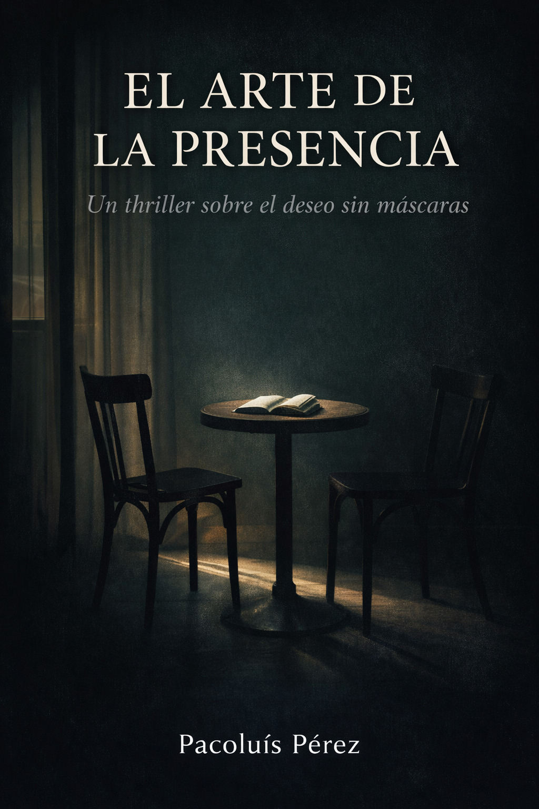

Thriller psicológico / Romance literario
Un thriller sobre el deseo sin máscaras
"El deseo no siempre necesita
tocar para ser peligroso"
Un estudiante español.
Una profesora taiwanesa.
Una cafetería en Taipéi.

"Los martes, en una cafetería de Yongkang,
descubre a una mujer que lee con una intensidad
que parece excluir al mundo."
Marcos llega a Taipéi huyendo de una vida que funcionaba demasiado bien. Un trabajo correcto. Una relación correcta. Un futuro correcto. Todo encajaba... excepto él.
Mei-Lin. Profesora de literatura comparada. Casada. Precisa. Lúcida. Y peligrosamente consciente del poder de las palabras.
Lo que comienza como una conversación sobre El amante de Marguerite Duras se convierte en un territorio ambiguo donde deseo, poder y escritura se entrelazan. Profesora y estudiante. Diferencia de edad. Matrimonio. Campus compartido.
Pero el verdadero riesgo no es la atracción. Es decidir escribirla.
Cuando ambos aceptan crear una novela a cuatro manos —una historia y su comentario en los márgenes— descubren que narrar el deseo puede ser tan arriesgado como vivirlo.
En una ciudad húmeda donde la lluvia convierte las calles en espejos, Marcos y Mei-Lin aprenden que la presencia no es solo estar. Es elegir no esconderse detrás del miedo, ni del discurso, ni del rol.
Un thriller íntimo donde la tensión no está en el crimen, sino en la conciencia. Porque hay historias que no matan. Pero transforman.
Profesora y alumno. El aula no es el único territorio
La atracción es física. La presencia es elección
No todo thriller necesita un cadáver
El poder cambia cuando alguien decide mirar sin máscaras
Escribir puede ser más íntimo que tocar
La pregunta no es si cruzarán el límite, sino qué significa estar presente cuando lo hacen
Explora otras obras de Pacoluís Pérez